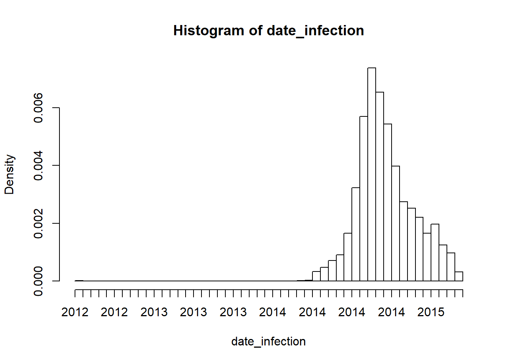
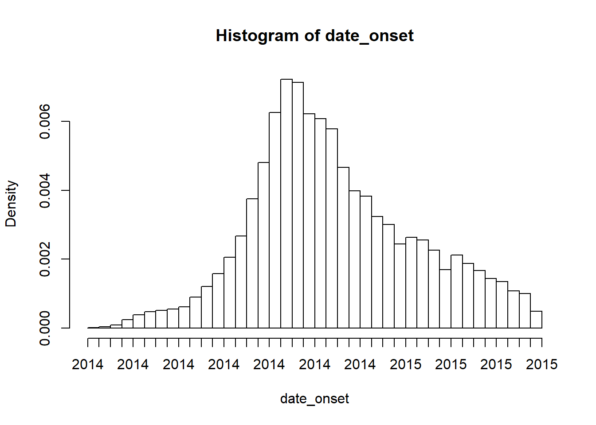
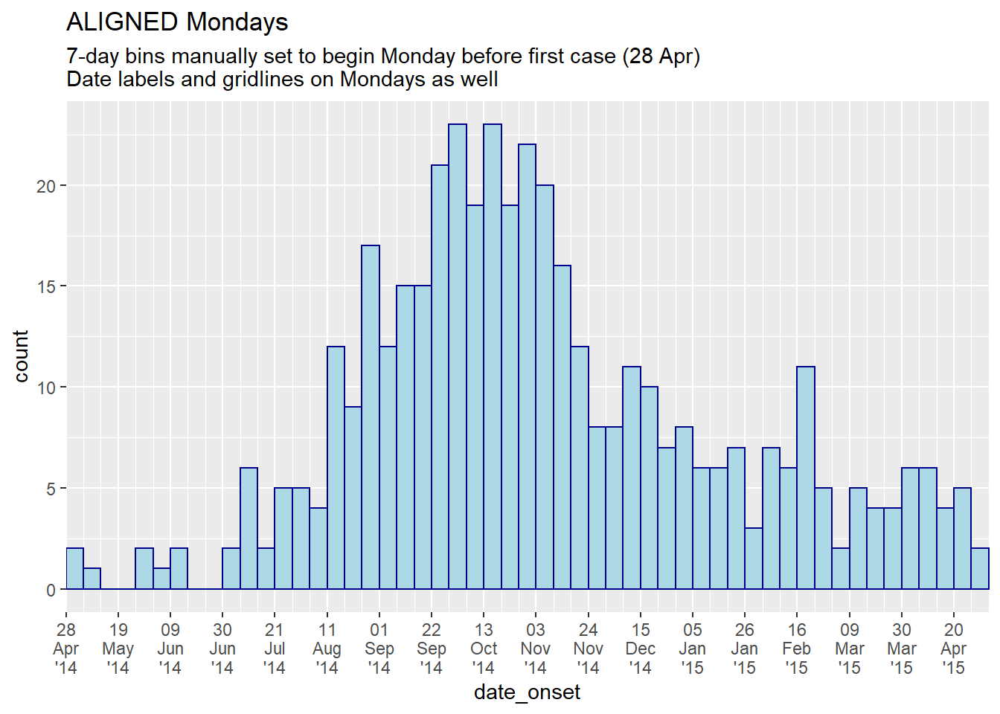
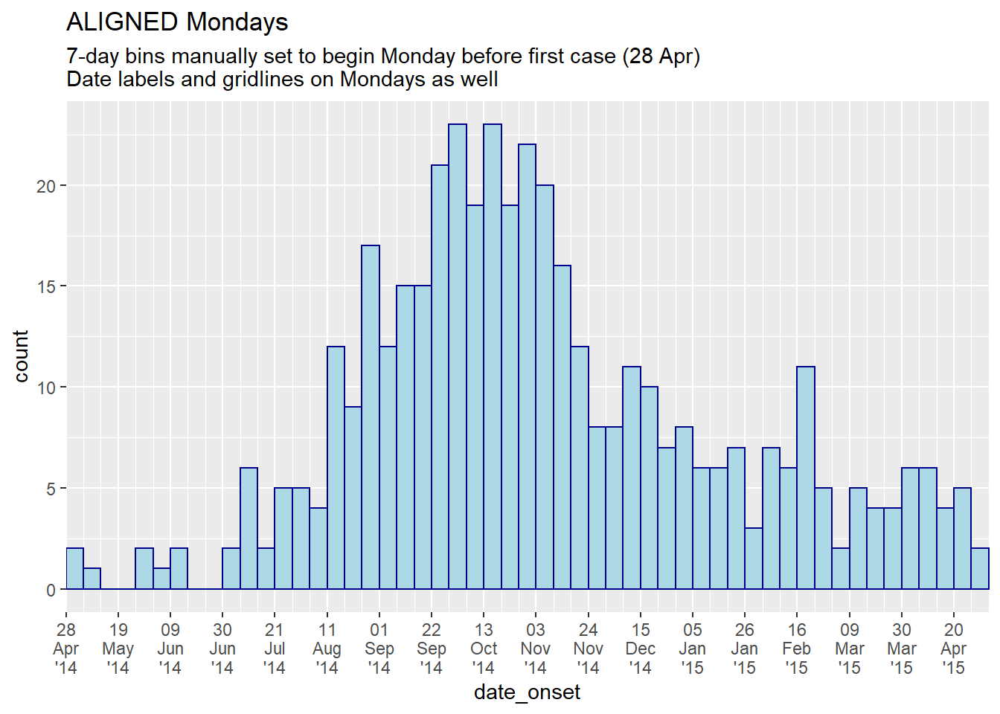

27 Epidemic curves

27.2 Preparation
27.2.1 Packages
This code chunk shows the loading of packages required for the analyses.
pacman::p_load(rio, # File import
here, # File locator
lubridate, # working with dates
aweek, # alternative package for working with dates
incidence, # an option for epicurves of linelist data
stringr, # Search and manipulate character strings
forcats, # working with factors
RColorBrewer, # Color palettes from colorbrewer2.org
tidyverse, # data management + ggplot2 graphics
) ##
## Your package installed## Warning in pacman::p_load(rio, here, lubridate, aweek, incidence, stringr, : Failed to install/load:27.2.2 Load data
Two example datasets are used in this section:
- Linelist of individual cases from a simulated epidemic
- Aggregated counts by hospital from the same simulated epidemic
The dataset is imported using the import() function from the rio package. See the page on importing data for various ways to import data. The linelist and aggregated versions of the data are displayed below.
For most of this document, the linelist dataset will be used. The aggregated counts dataset will be used at the end.
# fake import the linelist
linelist <- rio::import("linelist_cleaned.xlsx")Review the two datasets and notice the differences
Case linelist
The first 50 rows are displayed
Case counts aggregated by hospital
The first 50 rows are displayed
27.2.3 Set parameters
You may want to set certain parameters for production of a report, such as the date for which the data is current (the “data date”).
You can then reference the data_date in the code when applying filters or in captions that auto-update.
## set the report date for the report
## note: can be set to Sys.Date() for the current date
data_date <- as.Date("2015-05-15")27.2.4 Verify dates
Verify that each relevant date column is class Date and has an appropriate range of values. This for loop prints a histogram for each column.
# create character vector of column names
DateCols <- as.character(tidyselect::vars_select(names(linelist), matches("date|Date|dt")))
# Produce histogram of each date column
for (Col in DateCols) { # open loop. iterate for each name in vector DateCols
hist(linelist[, Col], # print histogram of the column in linelist dataframe
breaks = 50, # number of breaks for the histogram
xlab = Col) # x-axis label is the name of the column
} # close the loop

27.3 incidence package
Below are tabs on making quick epicurves using the incidence package
CAUTION: Epicontacts expects data to be in a “linelist” format of one row per case (not aggregated). If your data is aggregated counts, look to the ggplot epicurves tab.
TIP: The documentation for plotting an incidence object can be accessed by entering ?plot.incidence in your R console.
27.3.1 Intro
2 steps are requires to plot an epicurve with the incidence package:
-
Create an incidence object (using the function
incidence())- Provide the case linelist
- Specify the time interval into which the cases should be aggregated (daily, weekly, monthly..)
- Specify any sub-groups
- Provide the case linelist
-
Plot the incidence object
- Specify labels, aesthetic themes, etc.
A simple example - an epicurve of daily cases:
# load incidence package
library(incidence)
# create the incidence object using data by day
epi_day <- incidence(linelist$date_onset, # the linelist data
interval = "day") # the time interval## 241 missing observations were removed.
# plot the incidence object
plot(epi_day)
Change time interval of case aggregation (bars)
The interval argument defines how the observations are grouped. Available options include all the options from the package aweek, including but not limited to:
- “week” (Monday start day is default)
- “2 weeks” (or 3, 4, 5…)
- “Sunday week”
- “2 Sunday weeks” (or 3, 4, 5…)
- “MMWRweek” (starts on Sunday - see US CDC)
- “month” (1st of month)
- “quarter” (1st of month of quarter)
- “2 months” (or 3, 4, 5…)
- “year” (1st day of calendar year)
Below are examples of how different intervals look when applied to the linelist.
Format and frequency of the date labels on the x-axis are the defaults for the specified interval.
# Create the incidence objects (with different intervals)
##############################
# Weekly (Monday week by default)
epi_wk <- incidence(linelist$date_onset, interval = "Monday week")## 241 missing observations were removed.
# Sunday week
epi_Sun_wk <- incidence(linelist$date_onset, interval = "Sunday week")## 241 missing observations were removed.
# Three weeks (Monday weeks by default)
epi_3wk <- incidence(linelist$date_onset, interval = "3 weeks")## 241 missing observations were removed.
# Monthly
epi_month <- incidence(linelist$date_onset, interval = "month")## 241 missing observations were removed.
# Plot the incidence objects (+ titles for clarity)
############################
plot(epi_wk)+ labs(title = "Monday weeks")
plot(epi_Sun_wk)+ labs(title = "Sunday weeks")
plot(epi_3wk)+ labs(title = "Every 3 Monday weeks")
plot(epi_month)+ labs(title = "Months")


27.3.2 Modifications
The incidence package enables modifications in the following ways:
- Arguments of
plot()(e.g.show_cases,col_pal,alpha…)
-
scale_x_incidence()andmake_labels()
-
ggplot()additions via the+operator
Read details in the Help files by entering ?scale_x_incidence and ?plot.incidence in the R console. Online vignettes are listed in the resources tab.
27.3.2.1 plot() modifications
A incidence plot can be modified in the following ways. Type ?plot.incidence in the R console for more details.
-
show_cases =If TRUE, each case is shows as a box. Best on smaller outbreaks.
-
color =Color of case bars/boxes
-
border =Color of line around boxes, ifshow_cases = TRUE
-
alpha =Transparency of case bars/boxes (1 is fully opaque, 0 is fully transparent)
-
xlab =Title of x-axis (axis labels can also be applied usinglabs()from ggplot)
-
ylab =Title of y-axis; defaults to user-defined incidence time interval
-
labels_week =Logical, indicate whether x-axis labels are in week or date format, absent other modifications -
n_breaks =Number of x-axis label breaks, absent other modifications
-
first_date,last_dateDates used to trim the plot
See examples of these arguments in the subsequent tabs.
27.3.2.2 Filtered data
To plot the epicurve of a subset of data:
- Filter the linelist data
- Feed the subset to the
incidence()command
The example below uses data filtered to show only cases at Central Hospital.
# filter the dataset
central_data <- linelist %>%
filter(hospital == "Central Hospital")
# create incidence object using subset of data
central_outbreak <- incidence(central_data$date_onset, interval = "week")## 26 missing observations were removed.
# plot
plot(central_outbreak) + labs(title = "Weekly case incidence at Central Hospital")27.3.2.3 Date-axis labels/gridlines
TIP: Remember that date-axis labels are independent from the aggregation of the data into bars
Modify the bars
The aggregation of data into bars occurs when you set the interval = when creating the incidence object. The options for interval come from the package aweek and include options like “day”, “Monday week”, “Sunday week”, “month”, “2 weeks”, etc. See the incidence intro tab for more information.
Modify date-axis labels (frequency & format)
If working with the incidence package, you have several options to make these modifications. Some utilize the incidence package functions scale_x_date() and make_breaks(), others use the ggplot2 function scale_x_date(), and others use a combination.
DANGER: Be cautious setting the y-axis scale breaks (e.g. 0 to 30 by 5: seq(0, 30, 5)). Static numbers can cut-off your data if the data changes!.
27.3.2.3.1 Option 1: scale_x_incidence() only
- Add
scale_x_incidence()from the incidence package:- Why use this approach?
-
Advantages: Short code. Auto-adjusts weekly labels to interval of incidence object (Monday, Sunday weeks, etc.)
-
Disadvantages: Cannot make fine adjustments to label format or minor vertical gridlines between labels
-
Advantages: Short code. Auto-adjusts weekly labels to interval of incidence object (Monday, Sunday weeks, etc.)
- Provide the name of the incidence object to ensure labels align with specified
interval(e.g. Sundays or Mondays) -
optional:
n_breaksspecify number of date labels, which start from the interval of the first case.- for breaks every nth week, use
n_breaks = nrow(i)/n(“i” is the incidence object name and “n” is a number)
- for breaks every nth week, use
-
optional:
labels_weeklabels formatted as either weeks (YYYY-Www) or dates (YYYY-MM-DD)
- One vertical gridline will appear per date label
- Why use this approach?
Other notes:
- Type
?scale_x_incidenceinto the R console to see more information.
- If incidence interval is “month”, n_breaks and labels_week will behave differently
- Adding
scale_x_date()to the plot will remove labels created byscale_x_incidence
- Note in plot below that the first label is 27 April 2014, the Sunday before the first case (May 1), aligning with Sunday weeks of the incidence object.
# create weekly incidence object (Sunday weeks)
i <- incidence(central_data$date_onset, interval = "Sunday week")## 26 missing observations were removed.
plot(i)+
scale_x_incidence(i, # name of incidence object
labels_week = F, # show dates instead of weeks
n_breaks = nrow(i)/8) # breaks every 8 weeks from week of first case## Scale for 'x' is already present. Adding another scale for 'x', which will replace the existing scale.
27.3.2.3.2 Option 2: scale_x_date() and make_breaks()
- Add
scale_x_date()from ggplot2, but also leveragemake_breaks()from incidence:- Why use this approach?
- Advantages: Best of both worlds: weekly labels auto-aligned to incidence interval, and you can make detailed adjustments to label format
-
Disadvantages: If minor gridlines between Sunday-week date labels are desired, they are not auto-aligned
- After creating the incidence object, use
make_breaks()to define date label breaks-
make_breaks()is similar toscale_x_incidence()(described above). Provide the incidence object name and optionallyn_breaksas described before.
-
- Add
scale_x_date()to the plot:-
breaks =provide the breaks vector you created withmake_breaks(), followed by$breaks(see example below) -
date_labels =provide a format for the date labels (e.g. “%d %b”) (use “” for new line)
-
- Why use this approach?
# Break modification using scale_x_date() and make_breaks()
###########################################################
# make incidence object
i <- incidence(central_data$date_onset, interval = "Monday week")## 26 missing observations were removed.
# make breaks
i_labels <- make_breaks(i, n_breaks = nrow(i)/6) # using interval from i, breaks every 6 weeks
# plot
plot(i)+
scale_x_date(breaks = i_labels$breaks, # call the breaks
date_labels = "%d\n%b '%y", # date format
date_minor_breaks = "weeks") # gridlines each week (aligns with Sundays only) ## Scale for 'x' is already present. Adding another scale for 'x', which will replace the existing scale.
27.3.2.3.3 Option 3: Use scale_x_date() only
-
Use
scale_x_date()only-
Advantages: Complete control over breaks, labels, gridlines, and plot width
-
Disadvantages: More code required, more opportunity to make mistakes.
- If your incidence intervals are days or Monday weeks, (easy!):
- Provide interval to
date_breaks =(e.g. “day”, “week”, “2 weeks”, “month”, “year”) - Provide interval to
date_minor_breaks =for vertical lines between date labels
- Provide interval to
- If your incidence intervals are Sunday weeks, it is more complex - see the tab for a Sunday week example
- Provide a sequence of Sunday dates to
breaks =and tominor_breaks =
- Provide a sequence of Sunday dates to
- Use
date_labels =for formatting (see Dates page for tips)
- Add the argument
expand = c(0,0)to start labels at the first incidence bar. Otherwise, first label will shift depending on your specified label interval.
-
Advantages: Complete control over breaks, labels, gridlines, and plot width
*Note: if using aggregated counts (for example an epiweek x-axis) your x-axis may not be Date class and may require use scale_x_discrete() instead of scale_x_date() - see ggplot tips page for more details.
# Break modification using scale_x_date() only
##############################################
# make incidence object
i <- incidence(central_data$date_onset, interval = "Monday week")## 26 missing observations were removed.
# plot
plot(i)+
scale_x_date(expand = c(0,0), # remove excess x-axis space below and after case bars
date_breaks = "3 weeks", # labels appear every 3 Monday weeks
date_minor_breaks = "week", # vertical lines appear every Monday week
date_labels = "%d\n%b\n'%y") # date labels format ## Scale for 'x' is already present. Adding another scale for 'x', which will replace the existing scale.
27.3.2.3.4 A Sunday week example
If you want a plot of Sunday weeks and also finely-adjusted label formats, you might find a code example helpful.
Here is an example of producing a weekly epicurve using incidence for Sunday weeks, with finely-adjusted date labels through scale_x_date():
# load packages
pacman::p_load(tidyverse, # for ggplot
incidence, # for epicurve
lubridate) # for floor_date() and ceiling_date()
# create incidence object (specifying SUNDAY weeks)
central_outbreak <- incidence(central_data$date_onset, interval = "Sunday week") # equivalent to "MMWRweek" (see US CDC)## 26 missing observations were removed.
# plot() the incidence object
plot(central_outbreak)+
### ggplot() commands added to the plot
# scale modifications
scale_x_date(
expand = c(0,0), # remove excess x-axis space below and after case bars
# sequence by 3 weeks, from Sunday before first case to Sunday after last case
breaks = seq.Date(from = as.Date(floor_date(min(central_data$date_onset, na.rm=T), "week", week_start = 7)),
to = as.Date(ceiling_date(max(central_data$date_onset, na.rm=T), "week", week_start = 7)),
by = "3 weeks"),
# sequence by week, from Sunday before first case to Sunday after last case
minor_breaks = seq.Date(from = as.Date(floor_date(min(central_data$date_onset, na.rm=T), "week", week_start = 7)),
to = as.Date(ceiling_date(max(central_data$date_onset, na.rm=T), "week", week_start = 7)),
by = "7 days"),
# date labels
date_labels = "%d\n%b'%y")+ # adjust how dates are displayed
scale_y_continuous(
expand = c(0,0), # remove excess space under x-axis
breaks = seq(0, 30, 5))+ # adjust y-axis intervals
# Aesthetic themes
theme_minimal()+ # simplify background
theme(
axis.title = element_text(size = 12, face = "bold"), # axis titles formatting
plot.caption = element_text(face = "italic", hjust = 0))+ # caption formatting, left-aligned
# Plot labels
labs(x = "Week of symptom onset (Sunday weeks)",
y = "Weekly case incidence",
title = "Weekly case incidence at Central Hospital",
#subtitle = "",
caption = stringr::str_glue("n = {nrow(central_data)} from Central Hospital; Case onsets range from {format(min(central_data$date_onset, na.rm=T), format = '%a %d %b %Y')} to {format(max(central_data$date_onset, na.rm=T), format = '%a %d %b %Y')}\n{nrow(central_data %>% filter(is.na(date_onset)))} cases missing date of onset and not shown"))## Scale for 'x' is already present. Adding another scale for 'x', which will replace the existing scale.
27.3.2.4 Show individual cases
To show boxes around each individual case, use the argument show_cases = TRUE in the plot() function.
Boxes around each case can be more reader-friendly, if the outbreak is of a small size. Boxes can be applied when the interval is days, weeks, or any other time period. The code below creates the weekly epicurve for a smaller outbreak (only cases from Central Hospital), with boxes around each case.
# create filtered dataset for Central Hospital
central_data <- linelist %>%
filter(hospital == "Central Hospital")
# create incidence object (weekly)
central_outbreak <- incidence(central_data$date_onset, interval = "Monday week")## 26 missing observations were removed.
# plot outbreak
plot(central_outbreak,
show_cases = T) # show boxes around individual cases
The same epicurve showing individual cases, but with other aesthetic modifications:
# add plot() arguments and ggplot() commands
plot(central_outbreak,
show_cases = T, # show boxes around each individual case
color = "lightblue", # color inside boxes
border = "darkblue", # color of border around boxes
alpha = 0.5)+ # transparency
### ggplot() commands added to the plot
# scale modifications
scale_x_date(
expand = c(0,0), # remove excess x-axis space below and after case bars
date_breaks = "4 weeks", # labels appear every 4 Monday weeks
date_minor_breaks = "week", # vertical lines appear every Monday week
date_labels = "%d\n%b'%y")+ # date labels format
scale_y_continuous(
expand = c(0,0), # remove excess space under x-axis
breaks = seq(0, 35, 5))+ # adjust y-axis intervals
# aesthetic themes
theme_minimal()+ # simplify background
theme(
axis.title = element_text(size = 12, face = "bold"), # axis title format
plot.caption = element_text(face = "italic", hjust = 0))+ # caption format and left-align
# plot labels
labs(x = "Week of symptom onset (Monday weeks)",
y = "Weekly reported cases",
title = "Weekly case incidence at Central Hospital",
#subtitle = "",
caption = stringr::str_glue("n = {nrow(central_data)} from Central Hospital; Case onsets range from {format(min(central_data$date_onset, na.rm=T), format = '%a %d %b %Y')} to {format(max(central_data$date_onset, na.rm=T), format = '%a %d %b %Y')}\n{nrow(central_data %>% filter(is.na(date_onset)))} cases missing date of onset and not shown"))## Scale for 'x' is already present. Adding another scale for 'x', which will replace the existing scale.27.3.2.5 Color by value
To color the cases by value, provide the column to the groups = argument in the incidence() command. In the example below the cases are colored by their age category. Note the use of incidence() argument na_as_group =. If TRUE (by default) missing values (NA) will form their own group.
# Create incidence object, with data grouped by age category
age_outbreak <- incidence(linelist$date_onset, # date of onset for x-axis
interval = "week", # weekly aggregation of cases
groups = linelist$age_cat, # color by age_cat value
na_as_group = TRUE) # missing values assigned their own group## 241 missing observations were removed.
# plot the epicurve
plot(age_outbreak) Adjusting order
To adjust the order of group appearance (on plot and in legend), the group column must be class Factor. Adjust the order by adjusting the order of the levels (including NA). Below is an example with gender groups using data from Central Hospital only.
- First, the dataset is defined and gender is re-defined as a factor
- The order of levels of gender are defined with
NAfirst, so it appears on the top of the bars
- More appropriate labels are defined for each factor level - these appear in the legend
- The argument
exclude = NULLinfactor()is necessary to adjust the order ofNA, which is excluded by default.
- Title of legend adjusted using
fill =inlabs()
You can read more about factors in their page (LINK)
# Create incidence object, data grouped by gender
#################################################
# Classify "gender" column as factor
####################################
# with specific level order and labels, includin for missing values
central_data <- linelist %>%
filter(hospital == "Central Hospital") %>%
mutate(gender = factor(gender,
levels = c(NA, "f", "m"),
labels = c("Missing", "Female", "Male"),
exclude = NULL))
# Create incidence object, by gender
####################################
gender_outbreak_central <- incidence(central_data$date_onset,
interval = "week",
groups = central_data$gender,
na_as_group = TRUE) # Missing values assigned their own group## 26 missing observations were removed.
# plot epicurve with modifications
##################################
plot(gender_outbreak_central,
show_cases = TRUE)+ # show box around each case
### ggplot commands added to plot
# scale modifications
scale_x_date(expand = c(0,0),
date_breaks = "6 weeks",
date_minor_breaks = "week",
date_labels = "%d %b\n%Y")+
# aesthetic themes
theme_minimal()+ # simplify plot background
theme(
legend.title = element_text(size = 14, face = "bold"),
axis.title = element_text(face = "bold"))+ # axis title bold
# plot labels
labs(fill = "Gender", # title of legend
title = "Show case boxes, with modifications",
y = "Weekly case incidence",
x = "Week of symptom onset") ## Scale for 'x' is already present. Adding another scale for 'x', which will replace the existing scale.27.3.2.6 Change colors and legend
To change the legend
Use ggplot() commands such as:
-
theme(legend.position = "top")(or “bottom”, “left”, “right”) -
theme(legend.direction = "horizontal")
-
theme(legend.title = element_blank())to have no title
See the page of ggplot() tips for more details on legends.
To specify colors manually, provide the name of the color or a character vector of multiple colors to the argument color =. Note to function properly the number of colors listed must equal the number of groups (be aware of missing values as a group)
# weekly outbreak by hospital
hosp_outbreak <- incidence(linelist$date_onset,
interval = "week",
groups = linelist$hospital,
na_as_group = FALSE) # Missing values not assigned their own group## 241 missing observations were removed.
# default colors
plot(hosp_outbreak)
# manual colors
plot(hosp_outbreak, color = c("darkgreen", "darkblue", "purple", "grey", "yellow", "orange"))

To change the color palette
Use the argument col_pal in plot() to change the color palette to one of the default base R palettes (do not put the name of the palette in quotes).
Other palettes include TO DO add page with palette names… To DO
# Create incidence object, with data grouped by age category
age_outbreak <- incidence(linelist$date_onset, # date of onset for x-axis
interval = "week", # weekly aggregation of cases
groups = linelist$age_cat, # color by age_cat value
na_as_group = TRUE) # missing values assigned their own group## 241 missing observations were removed.
# plot the epicurve
plot(age_outbreak)
# plot with different color palette
plot(age_outbreak, col_pal = rainbow)

27.4 ggplot()
Below are tabs on using the ggplot2 package to produce epicurves from a linelist dataset.
Unlike using incidence package, you must manually control the aggregation of the data (into weeks, months, etc) and the labels on the date axis. If not carefully managed, this can lead to many headaches.
These tabs use a subset of the linelist dataset - only the cases from Central Hospital.
central_data <- linelist %>%
filter(hospital == "Central Hospital")27.4.1 Intro
To produce an epicurve with ggplot() there are three main elements:
- A histogram, to aggregate the linelisted cases into “bins” and display bars of the counts per bin (potentially by grouped values)
- Scales for the axes and their associated labels (see tab on modifications)
- Aesthetic themes for the plot, including titles, labels, captions, etc.
Below is perhaps the most simple code to produce daily and weekly epicurves. Axis scales and labels use default options.
# daily
ggplot(data = central_data, aes(x = date_onset)) + # x column must be class Date
geom_histogram(binwidth = 1)+ # date values binned by 1 day
labs(title = "Daily")## Warning: Removed 26 rows containing non-finite values (stat_bin).
# weekly
ggplot(data = central_data, aes(x = date_onset)) +
geom_histogram(binwidth = 7)+ # date values binned each 7 days (arbitrary 7 days!)
labs(title = "Weekly")## Warning: Removed 26 rows containing non-finite values (stat_bin).
 CAUTION: Using
CAUTION: Using binwidth = 7 starts the first bin at the first case, which could be any day of the week! To create specific Monday or Sunday weeks, see below .
To create weekly epicurves where the bins begin on a specific day of the week (e.g. Monday, Sunday), specify the histogram breaks = manually (not binwidth). This can be done by creating a sequence of dates using seq.Date() from base R. You can start/end the sequence at a specific date (as.Date("YYYY-MM-DD"), or write flexible code to begin the sequence at a specific day of the week before the first case. An example of creating such weekly breaks is below:
seq.Date(from = as.Date(floor_date(min(central_data$date_onset, na.rm=T), "week", week_start = 1)),
to = as.Date(ceiling_date(max(central_data$date_onset, na.rm=T), "week", week_start = 1)),
by = "7 days")To achieve the “from” value (earliest date of the sequence), the minimum value in the column date_onset is fed to floor_date() from the lubridate package, which according to the above specified arguments produces the start date of that “week”, given that the start of each week is a Monday (week_start = 1). Likewise, the “to” value (end date of the sequence) is specified using the inverse ceiling_date() function to produce the Monday after the last case. The “by” argument can be set to any length of days, weeks, or months.
This code is applied to create the histogram breaks, and also the breaks for the date labels. Read more about the date labels in the Modifications tab. Defining your breaks like above will be necessary if your weekly bins are not by Monday weeks.
Below is detailed code to produce weekly epicurves for Monday and Sunday weeks. See the tab on Modifications (axes) to learn the nuances of date-axis label management.
Monday weeks
Of note:
- The break points of the histogram bins are specified manually to begin the Monday (
week_start = 1) before the earliest case and to end the Monday after the last case (see explanation above).
- The breaks for date labels on x-axis - because the bins are Monday weeks this code uses
date_breaks =withinscale_x_date(), which also uses Monday weeks. Sunday weeks use a different method.
- Minor vertical gridlines between date labels are made using
date_minor_breaks =withinscale_x_date(), again because this plot is for Monday weeks. Sunday weeks use a different method.
- Adding
expand = c(0,0)to the x and y scales removes excess space on each side of the plot, which also ensures the labels begin at the first bar.
- Color and fill are defined in
geom_histogram()
# TOTAL MONDAY WEEK ALIGNMENT
#############################
ggplot(central_data, aes(x = date_onset)) +
# make histogram: specify bin break points: starts the Monday before first case, end Monday after last case
geom_histogram(
breaks = seq.Date(from = as.Date(floor_date(min(central_data$date_onset, na.rm=T), "week", week_start = 1)),
to = as.Date(ceiling_date(max(central_data$date_onset, na.rm=T), "week", week_start = 1)),
by = "7 days"), # bins are 7-days
color = "darkblue", # color of lines around bars
fill = "lightblue") + # color of fill within bars
# x-axis labels
scale_x_date(expand = c(0,0), # remove excess x-axis space below and after case bars
date_breaks = "3 weeks", # labels appear every 3 Monday weeks
date_minor_breaks = "week", # vertical lines appear every Monday week
date_labels = "%d\n%b\n'%y")+ # date labels format
# y-axis
scale_y_continuous(expand = c(0,0))+ # remove excess y-axis space between bottom of bars and the labels
# aesthetic themes
theme_minimal()+ # a set of themes to simplify plot
theme(plot.caption = element_text(face = "italic", hjust = 0), # caption on left side in italics
axis.title = element_text(face = "bold"))+ # axis titles in bold
# labels
labs(title = "Weekly incidence of cases (Monday weeks)",
subtitle = "Subtitle: Note alignment of bars, vertical lines, and axis labels on Mondays",
x = "Week of symptom onset",
y = "Weekly incident cases reported",
caption = stringr::str_glue("n = {nrow(central_data)} from Central Hospital; Case onsets range from {format(min(central_data$date_onset, na.rm=T), format = '%a %d %b %Y')} to {format(max(central_data$date_onset, na.rm=T), format = '%a %d %b %Y')}\n{nrow(central_data %>% filter(is.na(date_onset)))} cases missing date of onset and not shown"))## Warning: Removed 26 rows containing non-finite values (stat_bin).Sunday weeks
The below code creates a histogram of the rows, using a date column as the x-axis. Of note:
- The break points of the histogram bins are specified manually to begin the Sunday (
week_start = 7) before the earliest case and to end the Monday after the last case (see explanation above). - The breaks for date labels on the x-axis and vertical gridlines - because the bins are not Monday weeks, manually specified vectors of dates are given to
breaks =andminor_breaks =withinscale_x_date(). You cannot use thescale_x_date()arguments ofdate_breaksanddate_minor_breaksas these align with Monday weeks.
- Adding
expand = c(0,0)to the x and y scales removes excess space on each side of the plot, which also ensures the labels begin at the first bar.
- Color and fill are defined in
geom_histogram()
# TOTAL SUNDAY WEEK ALIGNMENT
#############################
ggplot(central_data, aes(x = date_onset)) +
# For histogram, manually specify bin break points: starts the Sunday before first case, end Sunday after last case
geom_histogram(
breaks = seq.Date(from = as.Date(floor_date(min(central_data$date_onset, na.rm=T), "week", week_start = 7)),
to = as.Date(ceiling_date(max(central_data$date_onset, na.rm=T), "week", week_start = 7)),
by = "7 days"), # bins are 7-days
color = "darkblue", # color of lines around bars
fill = "lightblue") + # color of fill within bars
# The labels on the x-axis
scale_x_date(expand = c(0,0),
breaks = seq.Date(from = as.Date(floor_date(min(central_data$date_onset, na.rm=T), "week", week_start = 7)),
to = as.Date(ceiling_date(max(central_data$date_onset, na.rm=T), "week", week_start = 7)),
by = "3 weeks"),
minor_breaks = seq.Date(from = as.Date(floor_date(min(central_data$date_onset, na.rm=T), "week", week_start = 7)),
to = as.Date(ceiling_date(max(central_data$date_onset, na.rm=T), "week", week_start = 7)),
by = "7 days"),
date_labels = "%d\n%b\n'%y")+ # day, above month abbrev., above 2-digit year
# y-axis
scale_y_continuous(expand = c(0,0))+ # removes excess y-axis space between bottom of bars and the labels
# aesthetic themes
theme_minimal()+ # a set of themes to simplify plot
theme(plot.caption = element_text(face = "italic", hjust = 0), # caption on left side in italics
axis.title = element_text(face = "bold"))+ # axis titles in bold
# labels
labs(title = "Weekly incidence of cases (Sunday weeks)",
subtitle = "Subtitle: Note alignment of bars, vertical lines, and axis labels on Sundays",
x = "Week of symptom onset",
y = "Weekly incident cases reported",
caption = stringr::str_glue("n = {nrow(central_data)} from Central Hospital; Case onsets range from {format(min(central_data$date_onset, na.rm=T), format = '%a %d %b %Y')} to {format(max(central_data$date_onset, na.rm=T), format = '%a %d %b %Y')}\n{nrow(central_data %>% filter(is.na(date_onset)))} cases missing date of onset and not shown"))## Warning: Removed 26 rows containing non-finite values (stat_bin).
27.4.2 Modifications
27.4.2.1 Modify axes
TIP: Remember that date-axis labels are independent from the aggregation of the data into bars
To modify the aggregation of data into bins/bars, do one of the following:
- Specify a
binwidth =withingeom_histogram()- for a column of class Date, the given number is interpreted in days
- Specify
breaks =as a sequence of bin break-point dates
- Group the rows into aggregated counts (by week, month, etc.) and feed the aggregated counts to
ggplot(). See the tab on aggregated counts for more information.
To modify the date labels, use scale_x_date() in one of these ways:
- If your histogram bins are days, Monday weeks, months, or years:
- Use
date_breaks =to specify label frequency (e.g. “day”, “week”, “3 weeks”, “month”, or “year”) - Use
date_minor_breaks =to specify frequency of minor vertical gridlines between date labels
- Add
expand = c(0,0)to begin the labels at the first bar (otherwise, first label will shift forward depending on specified frequency)
- Use
date_labels =to specify format of date labels - see the Dates page for tips (use\nfor a new line)
- Use
- If your histogram bins are Sunday weeks:
- Use
breaks =andminor_breaks =by providing a sequence of dates for breaks - You can still use
date_labels =for formatting as described above
- Use
To create a sequence of dates
You can use seq.Date() from base R. You can start/end the sequence at a specific date (as.Date("YYYY-MM-DD"), or write flexible code to begin the sequence at a specific day of the week before the first case. An example of creating such flexible breaks is below:
seq.Date(from = as.Date(floor_date(min(central_data$date_onset, na.rm=T), "week", week_start = 1)),
to = as.Date(ceiling_date(max(central_data$date_onset, na.rm=T), "week", week_start = 1)),
by = "7 days")To achieve the “from” value (earliest date of the sequence), the minimum value in the column date_onset is fed to floor_date() from the lubridate package, which according to the above specified arguments produces the start date of that “week”, given that the start of each week is a Monday (week_start = 1). Likewise, the “to” value (end date of the sequence) is specified using the inverse ceiling_date() function to produce the Monday after the last case. The “by” argument can be set to any length of days, weeks, or months.
If using aggregated counts (for example an epiweek x-axis) your x-axis may not be Date class and may require use scale_x_discrete() instead of scale_x_date() - see ggplot tips page for more details.
Set maximum and minimum date values using limits = c() within scale_x_date(). E.g. scale_x_date(limits = c(as.Date("2014-04-01), NA)) sets a minimum but leaves the maximum open.
CAUTION: Caution using limits! They remove all data outside the limits, which can impact y-axis max/min, modeling, and other statistics. Strongly consider instead using limits by adding coord_cartesian() to your plot, which acts as a “zoom” without removing data.
DANGER: Be cautious setting the y-axis scale breaks (e.g. 0 to 30 by 5: seq(0, 30, 5)). Static numbers can cut-off your data if the data changes!.
https://rdrr.io/r/base/strptime.html —– see all % shortcuts
Below is a demonstration of some plots where the bins and the plot labels/gridlines are aligned and not aligned:
Click “Code” to see the code
# 7-day binwidth defaults
#################
ggplot(central_data, aes(x = date_onset)) + # x column must be class Date
geom_histogram(
binwidth = 7, # 7 days per bin (! starts at first case!)
color = "darkblue", # color of lines around bars
fill = "lightblue") + # color of bar fill
labs(
title = "MISALIGNED",
subtitle = "!CAUTION: 7-day bars start Thursdays with first case\ndefault axis labels/ticks not aligned")## Warning: Removed 26 rows containing non-finite values (stat_bin).
# 7-day bins + Monday labels
#############################
ggplot(central_data, aes(x = date_onset)) +
geom_histogram(
binwidth = 7, # 7-day bins with start at first case
color = "darkblue",
fill = "lightblue") +
scale_x_date(
expand = c(0,0), # remove excess x-axis space below and after case bars
date_breaks = "3 weeks", # Monday every 3 weeks
date_minor_breaks = "week", # Monday weeks
date_labels = "%d\n%b\n'%y")+ # label format
scale_y_continuous(
expand = c(0,0))+ # remove excess space under x-axis, make flush with labels
labs(
title = "MISALIGNED",
subtitle = "!CAUTION: 7-day bars start Thursdays with first case\nDate labels and gridlines on Mondays")## Warning: Removed 26 rows containing non-finite values (stat_bin).
# 7-day bins + Months
#####################
ggplot(central_data, aes(x = date_onset)) +
geom_histogram(
binwidth = 7,
color = "darkblue",
fill = "lightblue") +
scale_x_date(
expand = c(0,0), # remove excess x-axis space below and after case bars
date_breaks = "months", # 1st of month
date_minor_breaks = "week", # Monday weeks
date_labels = "%d\n%b\n'%y")+ # label format
scale_y_continuous(
expand = c(0,0))+ # remove excess space under x-axis, make flush with labels
labs(
title = "MISALIGNED",
subtitle = "!CAUTION: 7-day bars start Thursdays with first case\nGridlines at 1st of each month (with labels) and weekly on Mondays\nLabels on 1st of each month")## Warning: Removed 26 rows containing non-finite values (stat_bin).
# TOTAL MONDAY ALIGNMENT: specify manual bin breaks to be mondays
#################################################################
ggplot(central_data, aes(x = date_onset)) +
geom_histogram(
# histogram breaks set to 7 days beginning Monday before first case
breaks = seq.Date(
from = as.Date(floor_date(min(central_data$date_onset, na.rm=T), "week", week_start = 1)),
to = as.Date(ceiling_date(max(central_data$date_onset, na.rm=T), "week", week_start = 1)),
by = "7 days"),
color = "darkblue",
fill = "lightblue") +
scale_x_date(
expand = c(0,0), # remove excess x-axis space below and after case bars
date_breaks = "3 weeks", # Monday every 3 weeks
date_minor_breaks = "week", # Monday weeks
date_labels = "%d\n%b\n'%y")+ # label format
labs(
title = "ALIGNED Mondays",
subtitle = "7-day bins manually set to begin Monday before first case (28 Apr)\nDate labels and gridlines on Mondays as well")## Warning: Removed 26 rows containing non-finite values (stat_bin).
# TOTAL SUNDAY ALIGNMENT: specify manual bin breaks AND labels to be Sundays
############################################################################
ggplot(central_data, aes(x = date_onset)) +
geom_histogram(
# histogram breaks set to 7 days beginning Sunday before first case
breaks = seq.Date(from = as.Date(floor_date(min(central_data$date_onset, na.rm=T), "week", week_start = 7)),
to = as.Date(ceiling_date(max(central_data$date_onset, na.rm=T), "week", week_start = 7)),
by = "7 days"),
color = "darkblue",
fill = "lightblue") +
scale_x_date(
expand = c(0,0),
# date label breaks set to every 3 weeks beginning Sunday before first case
breaks = seq.Date(from = as.Date(floor_date(min(central_data$date_onset, na.rm=T), "week", week_start = 7)),
to = as.Date(ceiling_date(max(central_data$date_onset, na.rm=T), "week", week_start = 7)),
by = "3 weeks"),
# gridlines set to weekly beginning Sunday before first case
minor_breaks = seq.Date(from = as.Date(floor_date(min(central_data$date_onset, na.rm=T), "week", week_start = 7)),
to = as.Date(ceiling_date(max(central_data$date_onset, na.rm=T), "week", week_start = 7)),
by = "7 days"),
date_labels = "%d\n%b\n'%y")+ # label format
labs(title = "ALIGNED Sundays",
subtitle = "7-day bins manually set to begin Sunday before first case (27 Apr)\nDate labels and gridlines manually set to Sundays as well")## Warning: Removed 26 rows containing non-finite values (stat_bin).
# Check values of bars by creating dataframe of grouped values
# central_tab <- central_data %>%
# mutate(week = aweek::date2week(date_onset, floor_day = TRUE, factor = TRUE)) %>%
# group_by(week, .drop=F) %>%
# summarize(n = n()) %>%
# mutate(groups_3wk = 1:(nrow(central_tab)+1) %/% 3) %>%
# group_by(groups_3wk) %>%
# summarize(n = n())
 

27.4.2.2 Color by groups
Designate a column containing groups
In any of the code template (Sunday weeks, Monday weeks), make the following changes:
- Add the aesthetics argument
aes()within thegeom_histogram()(don’t forget comma afterward) -
Within
aes(), provide the grouping column name togroup =andfill =(no quotes needed).groupis necessary, whilefillchanges the color of the bar.
- Remove any
fill =argument outside of theaes(), as it will override the one inside
- Arguments inside
aes()will apply by group, whereas any outside will apply to all bars (e.g. you may wantcolor =outside, so each bar has the same color perimeter/border)
geom_histogram(
aes(group = gender, fill = gender))Adjust colors:
- To manually adjust the bar fill color of each group, use
scale_fill_manual()(notescale_color_manual()is different!).- Use the
values =argument to apply a vector of colors.
- Use
na.value =to specify a color for missing values.
- ! While you can use the
labels =argument inscale_fill_manual()change the legend text labels - it is easy to accidentally give labels in the incorrect order and have an incorrect legend! It is recommended to instead convert the group column to class Factor and designate factorlabelsand order, as explained below.
- Use the
- To adjust the colors via a color scale, see the page on ggplot tips
Adjust the stacking order and Legend
Stacking order, and the labels for each group in the legend, is best adjusted by classifying the group column as class Factor. You can then designate the levels and their labels, and the order (which is reflected in stack order).
Step 1: Before making the ggplot, convert the group column to class Factor using factor() from base R.
For example, with a column “gender” with values “m” and “f” and NA, this can be put in a mutate() command as:
dataset <- dataset %>%
mutate(gender = factor(gender,
levels = c(NA, "f", "m"),
labels = c("Missing", "Female", "Male"),
exclude = NULL))The above code establishes the levels, in the ordering that missing values are “first” (and will appear on top). Then the labels that will show are given in the same order. Lastly, the exclude statement ensures that NA is included in the ordering (by default factor() ignores NA).
Read more about factors in their dedicated handbook page (LINK).
Adjusting the legend
Read more about legends in the ggplot tips page. Here are a few highlights:
-
theme(legend.position = "top")(or “bottom”, “left”, “right”) -
theme(legend.direction = "horizontal")
-
theme(legend.title = element_blank())to have no title
See the page of ggplot() tips for more details on legends.
These steps are shown in the example below:
Click “Code” to see the code
########################
# bin break points for histogram defined here for clarity
# starts the Monday before first case, end Monday after last case
bin_breaks = seq.Date(
from = as.Date(floor_date(min(central_data$date_onset, na.rm=T), "week", week_start = 1)),
to = as.Date(ceiling_date(max(central_data$date_onset, na.rm=T), "week", week_start = 1)),
by = "7 days") # bins are 7-days
# Set gender as factor and missing values as first level (to show on top)
central_data <- linelist %>%
filter(hospital == "Central Hospital") %>%
mutate(gender = factor(
gender,
levels = c(NA, "f", "m"),
labels = c("Missing", "Female", "Male"),
exclude = NULL))
# make plot
###########
ggplot(central_data, aes(x = date_onset)) +
geom_histogram(
aes(group = gender, fill = gender), # arguments inside aes() apply by group
color = "black", # arguments outside aes() apply to all data
breaks = bin_breaks)+ # see breaks defined above
# The labels on the x-axis
scale_x_date(
expand = c(0,0), # remove excess x-axis space below and after case bars
date_breaks = "3 weeks", # labels appear every 3 Monday weeks
date_minor_breaks = "week", # vertical lines appear every Monday week
date_labels = "%d\n%b\n'%y")+ # date labels format
# y-axis
scale_y_continuous(
expand = c(0,0))+ # removes excess y-axis space between bottom of bars and the labels
#scale of colors and legend labels
scale_fill_manual(
values = c("grey", "orange", "purple"))+ # specify fill colors ("values") - attention to order!
# aesthetic themes
theme_minimal()+ # a set of themes to simplify plot
theme(
plot.caption = element_text(face = "italic", hjust = 0), # caption on left side in italics
axis.title = element_text(face = "bold"))+ # axis titles in bold
# labels
labs(
title = "Weekly incidence of cases, by gender",
subtitle = "Subtitle",
fill = "Gender", # provide new title for legend
x = "Week of symptom onset",
y = "Weekly incident cases reported",
caption = stringr::str_glue("n = {nrow(central_data)} from Central Hospital; Case onsets range from {format(min(central_data$date_onset, na.rm=T), format = '%a %d %b %Y')} to {format(max(central_data$date_onset, na.rm=T), format = '%a %d %b %Y')}\n{nrow(central_data %>% filter(is.na(date_onset)))} cases missing date of onset and not shown"))## Warning: Removed 26 rows containing non-finite values (stat_bin).
Display bars side-by-side
Side-by-side display of group bars (as opposed to stacked) is specified within geom_histogram() with position = "dodge".
If there are more than two value groups, these can become difficult to read. Consider instead using a faceted plot (small multiples) (see tab). To improve readability in this example, missing gender values are removed.
Click “Code” to see the code
########################
# bin break points for histogram defined here for clarity
# starts the Monday before first case, end Monday after last case
bin_breaks = seq.Date(from = as.Date(floor_date(min(central_data$date_onset, na.rm=T), "week", week_start = 1)),
to = as.Date(ceiling_date(max(central_data$date_onset, na.rm=T), "week", week_start = 1)),
by = "7 days") # bins are 7-days
# New dataset without rows missing gender
central_data_dodge <- linelist %>%
filter(hospital == "Central Hospital") %>%
filter(!is.na(gender)) %>% # remove rows missing gender
mutate(gender = factor(gender, # factor now has only two levels (missing not included)
levels = c("f", "m"),
labels = c("Female", "Male")))
# make plot
###########
ggplot(central_data_dodge, aes(x = date_onset)) +
geom_histogram(
aes(group = gender, fill = gender), # arguments inside aes() apply by group
color = "black", # arguments outside aes() apply to all data
breaks = bin_breaks,
position = "dodge")+ # see breaks defined above
# The labels on the x-axis
scale_x_date(expand = c(0,0), # remove excess x-axis space below and after case bars
date_breaks = "3 weeks", # labels appear every 3 Monday weeks
date_minor_breaks = "week", # vertical lines appear every Monday week
date_labels = "%d\n%b\n'%y")+ # date labels format
# y-axis
scale_y_continuous(expand = c(0,0))+ # removes excess y-axis space between bottom of bars and the labels
#scale of colors and legend labels
scale_fill_manual(values = c("pink", "lightblue"))+ # specify fill colors ("values") - attention to order!
# aesthetic themes
theme_minimal()+ # a set of themes to simplify plot
theme(plot.caption = element_text(face = "italic", hjust = 0), # caption on left side in italics
axis.title = element_text(face = "bold"))+ # axis titles in bold
# labels
labs(title = "Weekly incidence of cases, by gender",
subtitle = "Subtitle",
fill = "Gender", # provide new title for legend
x = "Week of symptom onset",
y = "Weekly incident cases reported",
caption = stringr::str_glue("n = {nrow(central_data)} from Central Hospital; Case onsets range from {format(min(central_data$date_onset, na.rm=T), format = '%a %d %b %Y')} to {format(max(central_data$date_onset, na.rm=T), format = '%a %d %b %Y')}\n{nrow(central_data %>% filter(is.na(date_onset)))} cases missing date of onset and not shown"))## Warning: Removed 24 rows containing non-finite values (stat_bin).27.4.2.3 Faceting/small-multiples
As with other ggplots, you can create facetted plots (“small multiples”) off values in a column. As explained in the ggplot tips page of this handbook, you can use either:
facet_wrap()facet_grid()
For epicurves, facet_wrap() is typically easiest as it is likely that you only need to facet on one column. The general syntax is facet_wrap(rows ~ cols), where to the left of the tilde (~) is the name of a column to be spread across the “rows” of the new plot, and to the right of the tilde is the name of a column to be spread across the “columns” of the new plot.
Most simply, just use one column name, to the right of the tilde: facet_wrap(~age_cat).
Free axes
You will need to decide whether the scales (scales =) of the axes for each facet are “fixed” to the same dimensions (default), or “free” (meaning they will change based on the data within the facet). You can also specify “free_x” or “free_y” to release in only one dimension.
Number of cols and rows
This can be specified with ncol = and nrow = within facet_wrap().
Order of panels
To change the order of appearance, change the underlying order of the levels of the factor column used to create the facets.
Aesthetics
Font size and face, strip color, etc. can be modified through theme() with arguments like:
-
strip.text = element_text()(size, colour, face, angle…) -
strip.background = element_rect()(e.g. element_rect(fill=“red”))
The position of the strip can be modified as the strip.position = argument within facet_wrap() (e.g. “bottom”, “top”, “left”, “right”)
Strip labels
Labels of the facet plots can be modified through the “labels” of the column as a factor, or by the use of a “labeller”.
Make a labeller like this, using the function as_labeller() from ggplot2:
my_labels <- as_labeller(c(
"0-4" = "Ages 0-4",
"5-9" = "Ages 5-9",
"10-14" = "Ages 10-14",
"15-19" = "Ages 15-19",
"20-29" = "Ages 20-29",
"30-49" = "Ages 30-49",
"50-69" = "Ages 50-69",
"70+" = "Over age 70"))An example plot
Faceted by column age_cat. Click “Code” to see the code.
# make plot
###########
ggplot(central_data, aes(x = date_onset)) +
geom_histogram(
aes(group = age_cat, fill = age_cat), # arguments inside aes() apply by group
color = "black", # arguments outside aes() apply to all data
breaks = bin_breaks)+ # see breaks defined above
# The labels on the x-axis
scale_x_date(expand = c(0,0), # remove excess x-axis space below and after case bars
date_breaks = "2 months", # labels appear every 2 months
date_minor_breaks = "1 month", # vertical lines appear every 1 month
date_labels = "%b\n'%y")+ # date labels format
# y-axis
scale_y_continuous(expand = c(0,0))+ # removes excess y-axis space between bottom of bars and the labels
# aesthetic themes
theme_minimal()+ # a set of themes to simplify plot
theme(plot.caption = element_text(face = "italic", hjust = 0), # caption on left side in italics
axis.title = element_text(face = "bold"),
legend.position = "bottom",
strip.text = element_text(face = "bold", size = 10),
strip.background = element_rect(fill = "grey"))+ # axis titles in bold
# create facets
facet_wrap(~age_cat,
ncol = 4,
strip.position = "top",
labeller = my_labels)+
# labels
labs(title = "Weekly incidence of cases, by age category",
subtitle = "Subtitle",
fill = "Age category", # provide new title for legend
x = "Week of symptom onset",
y = "Weekly incident cases reported",
caption = stringr::str_glue("n = {nrow(central_data)} from Central Hospital; Case onsets range from {format(min(central_data$date_onset, na.rm=T), format = '%a %d %b %Y')} to {format(max(central_data$date_onset, na.rm=T), format = '%a %d %b %Y')}\n{nrow(central_data %>% filter(is.na(date_onset)))} cases missing date of onset and not shown"))## Warning: Removed 26 rows containing non-finite values (stat_bin).See this link for more information on labellers.
Add total epidemic to background
Add a separate geom_histogram() command before the current one. Specify that the data used is the data without the column used for faceting (see select()). Then, specify a color like “grey” and a degree of transparency to make it appear in the background.
geom_histogram(data = select(central_data, -age_cat), color = "grey", alpha = 0.5)+Note that the y-axis maximum is now based on the height of the entire epidemic. Click “Code” to see the code.
ggplot(central_data, aes(x = date_onset)) +
# for background shadow of whole outbreak
geom_histogram(data = select(central_data, -age_cat), color = "grey", alpha = 0.5)+
# actual epicurves by group
geom_histogram(
aes(group = age_cat, fill = age_cat), # arguments inside aes() apply by group
color = "black", # arguments outside aes() apply to all data
breaks = bin_breaks)+ # see breaks defined above
# Labels on x-axis
scale_x_date(expand = c(0,0), # remove excess x-axis space below and after case bars
date_breaks = "2 months", # labels appear every 2 months
date_minor_breaks = "1 month", # vertical lines appear every 1 month
date_labels = "%b\n'%y")+ # date labels format
# y-axis
scale_y_continuous(expand = c(0,0))+ # removes excess y-axis space between bottom of bars and the labels
# aesthetic themes
theme_minimal()+ # a set of themes to simplify plot
theme(plot.caption = element_text(face = "italic", hjust = 0), # caption on left side in italics
axis.title = element_text(face = "bold"),
legend.position = "bottom",
strip.text = element_text(face = "bold", size = 10),
strip.background = element_rect(fill = "white"))+ # axis titles in bold
# create facets
facet_wrap(~age_cat, # each plot is one value of age_cat
ncol = 4, # number of columns
strip.position = "top", # position of the facet title/strip
labeller = my_labels)+ # labeller defines above
# labels
labs(title = "Weekly incidence of cases, by age category",
subtitle = "Subtitle",
fill = "Age category", # provide new title for legend
x = "Week of symptom onset",
y = "Weekly incident cases reported",
caption = stringr::str_glue("n = {nrow(central_data)} from Central Hospital; Case onsets range from {format(min(central_data$date_onset, na.rm=T), format = '%a %d %b %Y')} to {format(max(central_data$date_onset, na.rm=T), format = '%a %d %b %Y')}\n{nrow(central_data %>% filter(is.na(date_onset)))} cases missing date of onset and not shown"))## `stat_bin()` using `bins = 30`. Pick better value with `binwidth`.## Warning: Removed 208 rows containing non-finite values (stat_bin).## Warning: Removed 26 rows containing non-finite values (stat_bin).Create one facet with ALL data
To do this, you duplicate all the data (double the number of rows in the dataset) and in the faceted column have a new value (e.g. “all”) which indicates all the duplicated rows. A helped function is below that enables this:
# Define helper function
CreateAllFacet <- function(df, col){
df$facet <- df[[col]]
temp <- df
temp$facet <- "all"
merged <-rbind(temp, df)
# ensure the facet value is a factor
merged[[col]] <- as.factor(merged[[col]])
return(merged)
}
# Create dataset that is duplicated, to show "all zones" as another facet level
central_data2 <- CreateAllFacet(central_data, col = "age_cat") %>%
mutate(facet = factor(facet,
levels = c("all", "0-4", "5-9", "10-14", "15-19", "20-29", "30-49", "50-69", "70+")))
# check
table(central_data2$facet, useNA = "always")##
## all 0-4 5-9 10-14 15-19 20-29 30-49 50-69 70+ <NA>
## 454 92 55 82 62 79 64 12 0 8Notable changes to the ggplot command are:
- The data used is now central_data2 (double the rows, with new column “facet”)
- Labeller will need to be updated, if used
- To achieve long/thin plot, facet variable moved to rows side of equation, replaced by “.”
facet_wrap(facet~.), andncol = 1
You may also need to adjust the width and height of the save plot image (see ggsave()).
ggplot(central_data2, aes(x = date_onset)) +
# actual epicurves by group
geom_histogram(
aes(group = age_cat, fill = age_cat), # arguments inside aes() apply by group
color = "black", # arguments outside aes() apply to all data
breaks = bin_breaks)+ # see breaks defined above
# Labels on x-axis
scale_x_date(expand = c(0,0), # remove excess x-axis space below and after case bars
date_breaks = "2 months", # labels appear every 2 months
date_minor_breaks = "1 month", # vertical lines appear every 1 month
date_labels = "%b\n'%y")+ # date labels format
# y-axis
scale_y_continuous(expand = c(0,0))+ # removes excess y-axis space between bottom of bars and the labels
# aesthetic themes
theme_minimal()+ # a set of themes to simplify plot
theme(plot.caption = element_text(face = "italic", hjust = 0), # caption on left side in italics
axis.title = element_text(face = "bold"),
legend.position = "bottom")+
# create facets
facet_wrap(facet~. , # each plot is one value of facet
ncol = 1)+
# labels
labs(title = "Weekly incidence of cases, by age category",
subtitle = "Subtitle",
fill = "Age category", # provide new title for legend
x = "Week of symptom onset",
y = "Weekly incident cases reported",
caption = stringr::str_glue("n = {nrow(central_data)} from Central Hospital; Case onsets range from {format(min(central_data$date_onset, na.rm=T), format = '%a %d %b %Y')} to {format(max(central_data$date_onset, na.rm=T), format = '%a %d %b %Y')}\n{nrow(central_data %>% filter(is.na(date_onset)))} cases missing date of onset and not shown"))## Warning: Removed 52 rows containing non-finite values (stat_bin).27.4.2.4 Moving averages
Add a moving averages to a ggplot() epicurve in one of two ways:
- Plot the pre-calculated moving average:
- Aggregate the data as necessary (daily, weekly, etc.)
- Calculate the moving average
- Add the moving average to the ggplot (e.g. with
geom_line())
- Aggregate the data as necessary (daily, weekly, etc.)
- Calculate on-the-fly within the
ggplot()command
27.4.2.4.1 Using slider
In this approach, the moving average is calculated in the dataset prior to plotting:
- Within
mutate(), a new column is created to hold the average.slide_index()from slider package is used as shown below.
- In the
ggplot(), ageom_line()is added after the histogram, reflecting the moving average.
See the helpful online vignette for the slider package
pacman::p_load(slider) # slider used to calculate rolling averages
# make dataset of daily counts and 7-day moving average
#######################################################
ll_counts_7day <- linelist %>%
## count cases by date
count(date_onset,
name = "new_cases") %>% # name of new column
filter(!is.na(date_onset)) %>% # remove cases with missing date_onset
## calculate the average number of cases in the preceding 7 days
mutate(
avg_7day = slider::slide_index( # create new column
new_cases, # calculate based on value in new_cases column
.i = date_onset, # index is date_onset col, so non-present dates are included in window
.f = ~mean(.x, na.rm = TRUE), # function is mean() with missing values removed
.before = 6, # window is the day and 6-days before
.complete = FALSE), # must be FALSE for unlist() to work in next step
avg_7day = unlist(avg_7day))
# plot
######
ggplot(data = ll_counts_7day, aes(x = date_onset)) +
geom_histogram(aes(y = new_cases),
fill="#92a8d1",
stat = "identity",
position = "stack",
colour = "#92a8d1")+
geom_line(aes(y = avg_7day, lty = "7-day \nrolling avg"),
color="red",
size = 1) +
scale_x_date(date_breaks = "1 month",
date_labels = '%d/%m',
expand = c(0,0)) +
scale_y_continuous(expand = c(0,0),
limits = c(0, NA)) +
labs(x="",
y ="Number of confirmed cases",
fill = "Legend")+
theme_minimal()+
theme(legend.title = element_blank()) # removes title of legend## Warning: Ignoring unknown parameters: binwidth, bins, pad
27.4.2.4.2 Using tidyquant
Using the tidyquant package to calculate the moving average on-the-fly (within ggplot()).
This option is more difficult to modify than pre-calculating the moving average. By default,geom_ma() uses the Simple Moving Average (SMA) (TRR::SMA()). See documentation by entering ?SMA in your R console. Calculates the arithmatic mean over the past n observations. Also note how the moving average does not begin as early as the previous example.
library(tidyquant)
# make daily count data
#######################
ll_counts_7day <- linelist %>%
count(date_onset, name = "daily_cases")
# plot
######
ggplot(data = ll_counts_7day, # use daily count data
aes(x = date_onset, # date x-axis
y = daily_cases))+ # counts
# histogram in the background
geom_histogram(stat = "identity", # height = value in the cell, not number of rows
color = "#92a8d1", # color of lines within histogram
fill = "#92a8d1")+ # color of histogram
# moving average line
tidyquant::geom_ma(n = 7, # window width
size = 2, # line size
color = "black", # line color
lty = "solid" # line type ()
)+
# labels for x-axis
scale_x_date(date_breaks = "2 months", # labels every 2 months
date_minor_breaks = "1 month", # gridlines every month
date_labels = '%b\n%Y')+ #labeled by month with year below
# Choose color palette (uses RColorBrewer package)
scale_fill_brewer(palette = "Pastel2")+
theme_minimal()+
labs(x = "Date of onset",
y = "Daily case incidence",
title = "Daily case incidence, with 7-day moving average")## Warning: Ignoring unknown parameters: binwidth, bins, pad## Warning: Removed 1 rows containing missing values (position_stack).
27.4.2.5 Tentative data
The most recent data shown in epicurves should often be marked as tentative, or subject to reporting delays. This can be done in by adding a vertical line and/or rectangle over a specified number of days. Here are two options:
- Use
annotate():
-
Pros: Transparency of rectangle is easy. Cons: Items will not appear in legend.
- For a line use
annotate(geom = "segment"). Providex,xend,y, andyend. Adjust size, linetype (lty), and color.
- For a rectangle use
annotate(geom = "rect"). Provide xmin/xmax/ymin/ymax. Adjust color and alpha.
- Use
geom_segment()andgeom_rect():
-
Pros: Items can easily appear in legend. Cons: Difficult to achieve semi-transparency of rectangle.
- Provide the same x/y arguments as noted above for
annotate()
CAUTION: While you can use geom_rect() to draw a rectangle, adjusting the transparency (alpha) does not work in a linelist context. This function overlays a rectangle for each observation/row!. Try a very low alpha (e.g. 0.01), or use annotate(geom = "rect") as shown.
27.4.2.5.1 Using annotate()
- Within
annotate(geom = "rect"), thexminandxmaxarguments must be given inputs of class Date.
- Note that because these data are aggregated into weekly bars, and the last bar extends to the Monday after the last data point, the shaded region may appear to cover 4 weeks
-
annotate()online example
ggplot(central_data, aes(x = date_onset)) +
# histogram
geom_histogram(
breaks = seq.Date(
from = as.Date(floor_date(min(central_data$date_onset, na.rm=T), "week", week_start = 1)),
to = as.Date(ceiling_date(max(central_data$date_onset, na.rm=T), "week", week_start = 1)),
by = "7 days"),
color = "darkblue",
fill = "lightblue") +
# scales
scale_y_continuous(expand = c(0,0))+
scale_x_date(
expand = c(0,0), # remove excess x-axis space below and after case bars
date_breaks = "1 month", # 1st of month
date_minor_breaks = "1 month", # 1st of month
date_labels = "%b\n'%y")+ # label format
# labels and theme
labs(title = "Using annotate()\nRectangle and line showing that data from last 21-days are tentative",
x = "Week of symptom onset",
y = "Weekly case indicence")+
theme_minimal()+
# add semi-transparent red rectangle to tentative data
annotate("rect",
xmin = as.Date(max(central_data$date_onset, na.rm = T) - 21), # note must be wrapped in as.Date()
xmax = as.Date(Inf), # note must be wrapped in as.Date()
ymin = 0,
ymax = Inf,
alpha = 0.2, # alpha easy and intuitive to adjust using annotate()
fill = "red")+
# add black vertical line on top of other layers
annotate("segment",
x = max(central_data$date_onset, na.rm = T) - 21, # 21 days before last data
xend = max(central_data$date_onset, na.rm = T) - 21,
y = 0, # line begins at y = 0
yend = Inf, # line to top of plot
size = 2, # line size
color = "black",
lty = "solid")+ # linetype e.g. "solid", "dashed"
# add text in rectangle
annotate("text",
x = max(central_data$date_onset, na.rm = T) - 15,
y = 20,
label = "Subject to reporting delays",
angle = 90)## Warning: Removed 26 rows containing non-finite values (stat_bin).
The same black vertical line can be achieved with the code below, but using geom_vline() you lose the ability to control the height:
geom_vline(xintercept = max(central_data$date_onset, na.rm = T) - 21,
size = 2,
color = "black")
27.4.2.5.2 Using geom_segment() and geom_rect()
ggplot(central_data, aes(x = date_onset)) +
# histogram
geom_histogram(
breaks = seq.Date(
from = as.Date(floor_date(min(central_data$date_onset, na.rm=T), "week", week_start = 1)),
to = as.Date(ceiling_date(max(central_data$date_onset, na.rm=T), "week", week_start = 1)),
by = "7 days"),
color = "darkblue",
fill = "lightblue") +
# scales
scale_y_continuous(expand = c(0,0))+
scale_x_date(
expand = c(0,0), # remove excess x-axis space below and after case bars
date_breaks = "3 weeks", # Monday every 3 weeks
date_minor_breaks = "week", # Monday weeks
date_labels = "%d\n%b\n'%y")+ # label format
# labels and theme
labs(title = "Using geom_segment() and geom_rect()\nRectangle and line showing that data from last 21-days are tentative",
subtitle = "")+
theme_minimal()+
# make rectangle covering last 21 days
geom_rect(aes(
xmin = as.Date(max(central_data$date_onset, na.rm = T) - 21), # note must be wrapped in as.Date()
xmax = as.Date(Inf), # note must be wrapped in as.Date()
ymin = 0,
ymax = Inf,
color = "Reporting delays\npossible"), # sets label for legend (note: is within aes())
alpha = .002, # !!! Difficult to adjust transparency with this option
fill = "red")+
# make vertical line
geom_segment(aes(x = max(central_data$date_onset, na.rm = T) - 21,
xend = max(central_data$date_onset, na.rm = T) - 21,
y = 0,
yend = Inf),
color = "black",
lty = "solid",
size = 2)+
theme(legend.title = element_blank()) # remove title of legend## Warning: Use of `central_data$date_onset` is discouraged. Use `date_onset` instead.
## Warning: Use of `central_data$date_onset` is discouraged. Use `date_onset` instead.
## Warning: Use of `central_data$date_onset` is discouraged. Use `date_onset` instead.## Warning: Removed 26 rows containing non-finite values (stat_bin).
27.4.2.7 Multi-level date labels
Here is an option if you want multi-level date labels, without duplicating the lower label levels (e.g. for year or month).
Remember, you can can use tools like \n within the date_labels or labels arguments to put parts of each label on a new line below. However, the code below helps you take years or months (for example) on a lower line and only once.
A few notes on the code below:
- Case counts are aggregated into weeks for aesthetic reasons. See Epicurves page (aggregated data tab) for details.
- A line is used instead of a histogram, as the faceting approach below does not work well with histograms.
Aggregate the weekly counts
# Create dataset of case counts by week
#######################################
central_weekly <- linelist %>%
filter(hospital == "Central Hospital") %>% # filter linelist
mutate(week = lubridate::floor_date(date_onset, unit = "weeks")) %>%
count(week, .drop=F) %>% # summarize weekly case counts
filter(!is.na(week)) %>% # remove cases with missing onset_date
complete(week = seq.Date(from = min(week), # fill-in all weeks with no cases reported
to = max(week),
by = "week"))Make plots
# plot
######
ggplot(central_weekly) +
geom_line(aes(x = week, y = n), # make line, specify x and y
stat = "identity") + # because line height is count number
scale_x_date(date_labels="%b", # date label format show month
date_breaks="month", # date labels on 1st of each month
expand=c(0,0)) + # remove excess space
facet_grid(~lubridate::year(week), # facet on year (of Date class column)
space="free_x",
scales="free_x", # x-axes adapt to data range (not "fixed")
switch="x") + # facet labels (year) on bottom
theme_bw() +
theme(strip.placement = "outside", # facet labels placement
strip.background = element_rect(fill = NA, # facet labels no fill grey border
colour = "grey50"),
panel.spacing = unit(0, "cm"))+ # no space between facet panels
labs(title = "Nested year labels, grey label border")
# plot no border
################
ggplot(central_weekly,
aes(x = week, y = n)) + # establish x and y for entire plot
geom_line(stat = "identity", # make line, line height is count number
color = "#69b3a2") + # line color
geom_point(size=1, color="#69b3a2") + # make points at the weekly data points
geom_area(fill = "#69b3a2", # fill area below line
alpha = 0.4)+ # fill transparency
scale_x_date(date_labels="%b", # date label format show month
date_breaks="month", # date labels on 1st of each month
expand=c(0,0)) + # remove excess space
facet_grid(~lubridate::year(week), # facet on year (of Date class column)
space="free_x",
scales="free_x", # x-axes adapt to data range (not "fixed")
switch="x") + # facet labels (year) on bottom
theme_bw() +
theme(strip.placement = "outside", # facet label placement
strip.background = element_blank(), # no facet lable background
panel.grid.minor.x = element_blank(),
panel.border = element_rect(colour="grey40"), # grey border to facet PANEL
panel.spacing=unit(0,"cm"))+ # No space between facet panels
labs(title = "Nested year labels - points, shaded, no label border")## Warning: Removed 3 rows containing missing values (position_stack).## Warning: Removed 3 rows containing missing values (geom_point).
The above techniques were adapted from this and this post on stackoverflow.com.
27.4.2.8 Aggregating linelist data
To learn generally how to group and aggregate data, see the handbook page on Grouping/Aggregating.
In this circumstance, we demonstrate aggregating into weeks, months, and days.
27.4.2.8.1 Weeks
Create a new column that is weeks, then use group_by() with summarize() to get weekly case counts.
To aggregate into weeks and show ALL weeks (even ones with no cases), do this:
- Create a new ‘week’ column within
mutate(), usingfloor_date()from the lubridate package:- use
unit =to set the desired time unit, e.g. "week`
- use
week_start =to set the weekday start of the week (7 = Sunday, 1 = Monday)
- use
- Follow with
complete()to ensure that all weeks appear - even those with no cases.
For example:
# Make dataset of weekly case counts
weekly_counts <- linelist %>%
mutate(
week = lubridate::floor_date(date_onset,
unit = "week")) %>% # new column of week of onset
count(week) %>% # group data by week and count rows per group
filter(!is.na(week)) %>% # remove entries for cases missing date_onset
complete(week = seq.Date(from = min(week), # fill-in all weeks with no cases reported
to = max(week),
by="week")) %>%
ungroup() # deactivate groupingHere are the first 50 rows of the resulting dataframe:
Alternatively, you can use the aweek package’s date2week() function. As shown below, set week_start = to “Sunday”, or “Monday”, etc. Set floor_date = TRUE so the output is YYYY-Www. Set factor = TRUE so that all possible weeks are included, even if there are no cases (this replaces the complete() step in the lubridate approach above). You can also use numeric = TRUE if you want only the week number (note this will not distinguish between years).
# Make dataset of weekly case counts
weekly_counts <- linelist %>%
mutate(week = aweek::date2week(date_onset, # new column of week of onset
floor_day = T, # show as weeks without weekday
factor = TRUE)) %>% # include all possible weeks
count(week) %>%
ungroup() # deactivate grouping
# Optional: add column of start DATE for each week - e.g. for ggplot() when date x-axis is expected
# note: add this step AFTER the above code, to ensure all weeks are present
weekly_counts <- weekly_counts %>%
mutate(week_as_date = aweek::week2date(week, week_start = "Monday")) # output is Monday date of each week27.4.2.8.2 Months
To aggregate cases into months, again use floor_date() from the lubridate package, but with the argument unit = "months". This rounds each date down to the 1st of its month. The output will be class Date.
Note that in the complete() step we also use “months”
# Make dataset of weekly case counts
monthly_counts <- linelist %>%
mutate(month = lubridate::floor_date(date_onset, unit = "months")) %>% # new column, 1st of month of onset
count(month) %>%
filter(!is.na(month)) %>%
complete(month = seq.Date(min(month), # fill-in all months with no cases reported
max(month),
by="month")) 27.4.2.8.3 Days
To aggregate a linelist into days, use the same approach but there is no need to create a new column. Use group_by() on the date column (e.g. date_onset).
If plotting a histogram, missing days in the data are not a problem as long as the column is class Date. However, it may be important for other types of plots or tables to have all possible days apear in the data. This is done with: tidyr::complete()
# Make dataset of weekly case counts
daily_counts <- linelist %>%
count(date_onset) %>% # count number of rows per unique date
filter(!is.na(date_onset)) %>% # remove aggregation of rows that were missing date_onset
complete(date_onset = seq.Date(min(date_onset), # ensure all days appear
max(date_onset),
by="day")) 27.5 Aggregated data
Often instead of a linelist, you begin with aggregated counts from facilities, districts, etc. You can make an epicurve from ggplot() but the code will be slightly different. The incidence package does not support aggregate data.
This section will utilize the count_data dataset that was imported earlier, in the data preparation section. It is the linelist aggregated to day-hospital counts. The first 50 rows are displayed below.
As before, we must ensure date variables are correctly classified.
# Convert Date variable to Date class
class(count_data$date_hospitalisation)## [1] "Date"We can plot a daily epicurve from these data. Here are the differences:
- Specify
y =to the counts column within the primary aestheticsaes() - Use of
stat = "identity"withingeom_histogram()indicates that the y-values could be counts from they =column inaes()
ggplot(data = count_data, aes(x = as.Date(date_hospitalisation), y = n_cases))+
geom_histogram(stat = "identity")+
labs(x = "Week of report",
y = "Number of cases",
Title = "Daily case incidence, from daily count data")## Warning: Ignoring unknown parameters: binwidth, bins, pad
aggregate further
To aggregated further, into weeks, we use the package lubridate and function floor_date(), as described above. Note that we use group_by() and summarize() in place of count() becase we need to sum() case counts instead of just counting the number of rows per group.
# Create weekly dataset with epiweek column
count_data_weekly <- count_data %>%
mutate(epiweek = lubridate::floor_date(date_hospitalisation, "week")) %>%
group_by(hospital, epiweek, .drop=F) %>%
summarize(n_cases_weekly = sum(n_cases, na.rm=T)) ## `summarise()` has grouped output by 'hospital'. You can override using the `.groups` argument.The first 50 rows of count_data are displayed below.
For the plotting we also specify the factor level order of hospital.
count_data_weekly <- count_data_weekly %>%
mutate(hospital = factor(hospital,
levels = c("Missing", "Port Hospital", "Military Hospital", "Central Hospital", "St. Mark's Maternity Hospital (SMMH)", "Other")))Now plot by epiweek.
ggplot(data = count_data_weekly,
aes(x = epiweek,
y = n_cases_weekly,
group = hospital,
fill = hospital))+
geom_histogram(stat = "identity")+
# labels for x-axis
scale_x_date(date_breaks = "2 months", # labels every 2 months
date_minor_breaks = "1 month", # gridlines every month
date_labels = '%b\n%Y')+ #labeled by month with year below
# Choose color palette (uses RColorBrewer package)
scale_fill_brewer(palette = "Pastel2")+
theme_minimal()+
labs(x = "Week of onset",
y = "Weekly case incidence",
fill = "Hospital",
title = "Weekly case incidence, from aggregated count data by hospital")## Warning: Ignoring unknown parameters: binwidth, bins, pad
27.6 Dual-axis
Although there are fierce discussions about the validity of this within the data visualization community, many supervisors want to see an epicurve or similar chart with a percent overlaid with a second axis.
In ggplot it is difficult to do this, except for the case where you are showing a line reflecting the proportion of a category shown in the bars below.
See the handbook page on ggplot tips for details on how to make a second axis.
Cumulative Incidence
If beginning with a case linelist, create a new column containing the cumulative number of cases per day in an outbreak using cumsum() from base R:
cumulative_case_counts <- linelist %>%
count(date_onset) %>% # count of rows per day
mutate(
cumulative_cases = cumsum(n) # new column of the cumulative number of rows at each date
)
cumulative_case_counts## date_onset n cumulative_cases
## 1 2014-04-07 1 1
## 2 2014-04-15 1 2
## 3 2014-04-21 2 4
## 4 2014-04-25 1 5
## 5 2014-04-26 1 6
## 6 2014-04-27 1 7
## 7 2014-05-01 2 9
## 8 2014-05-03 1 10
## 9 2014-05-04 1 11
## 10 2014-05-05 1 12
## 11 2014-05-06 3 15
## 12 2014-05-07 2 17
## 13 2014-05-08 2 19
## 14 2014-05-09 2 21
## 15 2014-05-10 1 22
## 16 2014-05-11 1 23
## 17 2014-05-12 2 25
## 18 2014-05-13 3 28
## 19 2014-05-14 3 31
## 20 2014-05-16 2 33
## 21 2014-05-17 3 36
## 22 2014-05-18 4 40
## 23 2014-05-19 2 42
## 24 2014-05-20 1 43
## 25 2014-05-21 3 46
## 26 2014-05-22 1 47
## 27 2014-05-23 2 49
## 28 2014-05-24 2 51
## 29 2014-05-25 2 53
## 30 2014-05-26 4 57
## 31 2014-05-27 11 68
## 32 2014-05-28 1 69
## 33 2014-05-29 1 70
## 34 2014-05-30 1 71
## 35 2014-05-31 1 72
## 36 2014-06-02 5 77
## 37 2014-06-03 3 80
## 38 2014-06-05 3 83
## 39 2014-06-06 4 87
## 40 2014-06-07 5 92
## 41 2014-06-08 1 93
## 42 2014-06-09 5 98
## 43 2014-06-10 5 103
## 44 2014-06-11 3 106
## 45 2014-06-12 1 107
## 46 2014-06-13 1 108
## 47 2014-06-14 2 110
## 48 2014-06-15 5 115
## 49 2014-06-16 6 121
## 50 2014-06-17 4 125
## 51 2014-06-18 2 127
## 52 2014-06-19 2 129
## 53 2014-06-20 7 136
## 54 2014-06-21 3 139
## 55 2014-06-22 4 143
## 56 2014-06-23 2 145
## 57 2014-06-24 5 150
## 58 2014-06-25 5 155
## 59 2014-06-26 3 158
## 60 2014-06-27 2 160
## 61 2014-06-28 2 162
## 62 2014-06-29 2 164
## 63 2014-06-30 6 170
## 64 2014-07-01 4 174
## 65 2014-07-02 4 178
## 66 2014-07-03 5 183
## 67 2014-07-04 7 190
## 68 2014-07-05 5 195
## 69 2014-07-06 3 198
## 70 2014-07-07 3 201
## 71 2014-07-08 7 208
## 72 2014-07-09 8 216
## 73 2014-07-10 5 221
## 74 2014-07-11 4 225
## 75 2014-07-12 6 231
## 76 2014-07-13 6 237
## 77 2014-07-14 11 248
## 78 2014-07-15 9 257
## 79 2014-07-16 6 263
## 80 2014-07-17 6 269
## 81 2014-07-18 9 278
## 82 2014-07-19 7 285
## 83 2014-07-20 11 296
## 84 2014-07-21 4 300
## 85 2014-07-22 6 306
## 86 2014-07-23 11 317
## 87 2014-07-24 8 325
## 88 2014-07-25 10 335
## 89 2014-07-26 7 342
## 90 2014-07-27 12 354
## 91 2014-07-28 6 360
## 92 2014-07-29 15 375
## 93 2014-07-30 14 389
## 94 2014-07-31 8 397
## 95 2014-08-01 10 407
## 96 2014-08-02 14 421
## 97 2014-08-03 13 434
## 98 2014-08-04 18 452
## 99 2014-08-05 18 470
## 100 2014-08-06 9 479
## 101 2014-08-07 9 488
## 102 2014-08-08 9 497
## 103 2014-08-09 10 507
## 104 2014-08-10 13 520
## 105 2014-08-11 17 537
## 106 2014-08-12 6 543
## 107 2014-08-13 17 560
## 108 2014-08-14 13 573
## 109 2014-08-15 19 592
## 110 2014-08-16 29 621
## 111 2014-08-17 13 634
## 112 2014-08-18 14 648
## 113 2014-08-19 15 663
## 114 2014-08-20 20 683
## 115 2014-08-21 19 702
## 116 2014-08-22 29 731
## 117 2014-08-23 18 749
## 118 2014-08-24 27 776
## 119 2014-08-25 21 797
## 120 2014-08-26 18 815
## 121 2014-08-27 24 839
## 122 2014-08-28 23 862
## 123 2014-08-29 26 888
## 124 2014-08-30 25 913
## 125 2014-08-31 20 933
## 126 2014-09-01 31 964
## 127 2014-09-02 26 990
## 128 2014-09-03 29 1019
## 129 2014-09-04 29 1048
## 130 2014-09-05 22 1070
## 131 2014-09-06 36 1106
## 132 2014-09-07 31 1137
## 133 2014-09-08 36 1173
## 134 2014-09-09 35 1208
## 135 2014-09-10 24 1232
## 136 2014-09-11 30 1262
## 137 2014-09-12 32 1294
## 138 2014-09-13 28 1322
## 139 2014-09-14 43 1365
## 140 2014-09-15 40 1405
## 141 2014-09-16 49 1454
## 142 2014-09-17 36 1490
## 143 2014-09-18 39 1529
## 144 2014-09-19 36 1565
## 145 2014-09-20 50 1615
## 146 2014-09-21 51 1666
## 147 2014-09-22 30 1696
## 148 2014-09-23 50 1746
## 149 2014-09-24 37 1783
## 150 2014-09-25 42 1825
## 151 2014-09-26 34 1859
## 152 2014-09-27 39 1898
## 153 2014-09-28 45 1943
## 154 2014-09-29 40 1983
## 155 2014-09-30 38 2021
## 156 2014-10-01 37 2058
## 157 2014-10-02 44 2102
## 158 2014-10-03 30 2132
## 159 2014-10-04 43 2175
## 160 2014-10-05 46 2221
## 161 2014-10-06 42 2263
## 162 2014-10-07 41 2304
## 163 2014-10-08 40 2344
## 164 2014-10-09 26 2370
## 165 2014-10-10 36 2406
## 166 2014-10-11 34 2440
## 167 2014-10-12 33 2473
## 168 2014-10-13 35 2508
## 169 2014-10-14 33 2541
## 170 2014-10-15 36 2577
## 171 2014-10-16 39 2616
## 172 2014-10-17 31 2647
## 173 2014-10-18 38 2685
## 174 2014-10-19 31 2716
## 175 2014-10-20 40 2756
## 176 2014-10-21 27 2783
## 177 2014-10-22 35 2818
## 178 2014-10-23 42 2860
## 179 2014-10-24 42 2902
## 180 2014-10-25 22 2924
## 181 2014-10-26 40 2964
## 182 2014-10-27 29 2993
## 183 2014-10-28 33 3026
## 184 2014-10-29 24 3050
## 185 2014-10-30 38 3088
## 186 2014-10-31 38 3126
## 187 2014-11-01 37 3163
## 188 2014-11-02 36 3199
## 189 2014-11-03 29 3228
## 190 2014-11-04 35 3263
## 191 2014-11-05 26 3289
## 192 2014-11-06 29 3318
## 193 2014-11-07 34 3352
## 194 2014-11-08 32 3384
## 195 2014-11-09 23 3407
## 196 2014-11-10 27 3434
## 197 2014-11-11 26 3460
## 198 2014-11-12 18 3478
## 199 2014-11-13 31 3509
## 200 2014-11-14 22 3531
## 201 2014-11-15 30 3561
## 202 2014-11-16 23 3584
## 203 2014-11-17 20 3604
## 204 2014-11-18 18 3622
## 205 2014-11-19 11 3633
## 206 2014-11-20 21 3654
## 207 2014-11-21 19 3673
## 208 2014-11-22 21 3694
## 209 2014-11-23 31 3725
## 210 2014-11-24 35 3760
## 211 2014-11-25 28 3788
## 212 2014-11-26 14 3802
## 213 2014-11-27 21 3823
## 214 2014-11-28 25 3848
## 215 2014-11-29 18 3866
## 216 2014-11-30 20 3886
## 217 2014-12-01 21 3907
## 218 2014-12-02 22 3929
## 219 2014-12-03 18 3947
## 220 2014-12-04 32 3979
## 221 2014-12-05 20 3999
## 222 2014-12-06 20 4019
## 223 2014-12-07 23 4042
## 224 2014-12-08 16 4058
## 225 2014-12-09 15 4073
## 226 2014-12-10 18 4091
## 227 2014-12-11 18 4109
## 228 2014-12-12 18 4127
## 229 2014-12-13 17 4144
## 230 2014-12-14 20 4164
## 231 2014-12-15 18 4182
## 232 2014-12-16 17 4199
## 233 2014-12-17 20 4219
## 234 2014-12-18 16 4235
## 235 2014-12-19 17 4252
## 236 2014-12-20 15 4267
## 237 2014-12-21 18 4285
## 238 2014-12-22 18 4303
## 239 2014-12-23 15 4318
## 240 2014-12-24 14 4332
## 241 2014-12-25 20 4352
## 242 2014-12-26 19 4371
## 243 2014-12-27 19 4390
## 244 2014-12-28 11 4401
## 245 2014-12-29 15 4416
## 246 2014-12-30 19 4435
## 247 2014-12-31 11 4446
## 248 2015-01-01 13 4459
## 249 2015-01-02 13 4472
## 250 2015-01-03 12 4484
## 251 2015-01-04 11 4495
## 252 2015-01-05 14 4509
## 253 2015-01-06 18 4527
## 254 2015-01-07 17 4544
## 255 2015-01-08 10 4554
## 256 2015-01-09 15 4569
## 257 2015-01-10 16 4585
## 258 2015-01-11 11 4596
## 259 2015-01-12 17 4613
## 260 2015-01-13 19 4632
## 261 2015-01-14 14 4646
## 262 2015-01-15 12 4658
## 263 2015-01-16 18 4676
## 264 2015-01-17 15 4691
## 265 2015-01-18 15 4706
## 266 2015-01-19 15 4721
## 267 2015-01-20 11 4732
## 268 2015-01-21 13 4745
## 269 2015-01-22 22 4767
## 270 2015-01-23 11 4778
## 271 2015-01-24 14 4792
## 272 2015-01-25 11 4803
## 273 2015-01-26 13 4816
## 274 2015-01-27 11 4827
## 275 2015-01-28 14 4841
## 276 2015-01-29 11 4852
## 277 2015-01-30 10 4862
## 278 2015-01-31 16 4878
## 279 2015-02-01 10 4888
## 280 2015-02-02 16 4904
## 281 2015-02-03 13 4917
## 282 2015-02-04 13 4930
## 283 2015-02-05 10 4940
## 284 2015-02-06 11 4951
## 285 2015-02-07 8 4959
## 286 2015-02-08 11 4970
## 287 2015-02-09 11 4981
## 288 2015-02-10 12 4993
## 289 2015-02-11 8 5001
## 290 2015-02-12 9 5010
## 291 2015-02-13 8 5018
## 292 2015-02-14 8 5026
## 293 2015-02-15 10 5036
## 294 2015-02-16 8 5044
## 295 2015-02-17 9 5053
## 296 2015-02-18 11 5064
## 297 2015-02-19 13 5077
## 298 2015-02-20 13 5090
## 299 2015-02-21 15 5105
## 300 2015-02-22 13 5118
## 301 2015-02-23 11 5129
## 302 2015-02-24 16 5145
## 303 2015-02-25 6 5151
## 304 2015-02-26 8 5159
## 305 2015-02-27 10 5169
## 306 2015-02-28 16 5185
## 307 2015-03-01 11 5196
## 308 2015-03-02 11 5207
## 309 2015-03-03 7 5214
## 310 2015-03-04 11 5225
## 311 2015-03-05 16 5241
## 312 2015-03-06 9 5250
## 313 2015-03-07 10 5260
## 314 2015-03-08 8 5268
## 315 2015-03-09 14 5282
## 316 2015-03-10 7 5289
## 317 2015-03-11 10 5299
## 318 2015-03-12 11 5310
## 319 2015-03-13 11 5321
## 320 2015-03-14 7 5328
## 321 2015-03-15 5 5333
## 322 2015-03-16 11 5344
## 323 2015-03-17 6 5350
## 324 2015-03-18 8 5358
## 325 2015-03-19 9 5367
## 326 2015-03-20 13 5380
## 327 2015-03-21 9 5389
## 328 2015-03-22 7 5396
## 329 2015-03-23 9 5405
## 330 2015-03-24 4 5409
## 331 2015-03-25 9 5418
## 332 2015-03-26 7 5425
## 333 2015-03-27 13 5438
## [ reached 'max' / getOption("max.print") -- omitted 35 rows ]This cumulative column can then be plotted:
plot_cumulative <- ggplot()+
geom_line(
data = cumulative_case_counts,
aes(x = date_onset, y = cumulative_cases),
size = 2,
color = "blue")
plot_cumulative## Warning: Removed 1 row(s) containing missing values (geom_path).
It can also be overlaid onto the epicurve, with dual-axis:
pacman::p_load(cowplot)
plot_cases <- ggplot()+
geom_histogram(
data = linelist,
aes(x = date_onset),
binwidth = 1)+
labs(
y = "Daily cases",
x = "Date of symptom onset"
)+
theme_cowplot()
plot_cumulative <- ggplot()+
geom_line(
data = cumulative_case_counts,
aes(x = date_onset, y = cumulative_cases),
size = 2,
color = "blue")+
scale_y_continuous(
position = "right")+
labs(x = "",
y = "Cumulative cases")+
theme_cowplot()+
theme(
axis.line.x = element_blank(),
axis.text.x = element_blank(),
axis.title.x = element_blank(),
axis.ticks = element_blank())
aligned_plots <- align_plots(plot_cases, plot_cumulative, align="hv", axis="tblr")## Warning: Removed 241 rows containing non-finite values (stat_bin).## Warning: Removed 1 row(s) containing missing values (geom_path).
ggdraw(aligned_plots[[1]]) + draw_plot(aligned_plots[[2]])